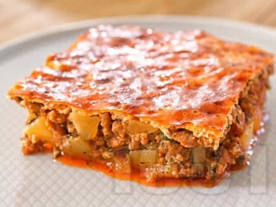

Musaka

Musaka
Мусака! Царицата на българската кухня! Едно от най-обичаните и най-често приготвяните ястия. Мусаката е абсолютният любимец както на всеки българин, така и на чужденците. Ако се притеснявате какво да сготвите на гостите от чужбина, можете да заложите на мусаката. Чуждестранните гости едва ли ще харесат таратора и едва ли ще съберат сили да пробват печените чушки с доматен сос, но мусаката задължително ще спечели доверието им, ще си оближат пръстите и ще искат порция допълнително. Рецептите за мусака нямат много вариации, вариантите са основно в приготвянето на заливката. Предложената тук рецепта за мусака е класическа, лесна и подходяща и за по-неопитните готвачи.
Sustavki
- Kaima-500gr.
- Luk-2br.
- kiselo-mlqko 400gr.
- olio-1kafqna chasha
- chubrica 1-lujica(chaena)
- kartof-1kg.
- domat-2br.
- qica-2br
- brashno-5sup.lajici
- cherven piper-1chaena lujica
- Загрявате мазнината в дълбок тиган или тенджера. В загрятата мазнина задушете измитият, изчистен и нарязан на дребно лук, докато омекне. Добавяте нарязаните на дребно половината домати и каймата, черният пипер и чубрицата, както и една чаена лъжица сол. Може да ползвате кайма, каквато имате под ръка, но най-вкусната мусаката става с кайма смес – 50% свинско и 50 % телешко месо.
- След като водата от доматите изври добавяте червения пипер. Измивате, почиствате, обелвате и нарязвате на дребни кубчета картофите и ги прибавяте към месото. Намазнявате тавичка на дъното на която поставяте другата половина от доматите и върху тях изсипвате сместа за мусака. Добавяте една непълна чаена чаша гореща вода и поставяте в предварително загрята на 200 градуса фурна. Печете до докато водата изври, а картофите станат златисти.
- Идва моментът за приготвяне на заливката за мусаката. Тя става лесно и много бързо. Разбърквате киселото мляко и яйцата, след което при постоянно бъркане добавяте и брашното, до получаване на гладка смес. Накрая добавяте и настъргания на дребно кашкавал. Заливате мусаката и печете докато порозовее.